Příběh jinak se začal psát
Rok 2076 je ještě daleko. Už teď ale víme, že až budeme jednou vzpomínat na nejlepší chvíle života, tenhle víkend v tom vyprávění nebude chybět. A Smrťák zatím odchází s prázdnou.
Bouda Artur · 20.–22. listopadu 2026
Vaši Martin, Dan, Michal a Petr
Rok 2076 je ještě daleko. Už teď ale víme, že až budeme jednou vzpomínat na nejlepší chvíle života, tenhle víkend v tom vyprávění nebude chybět. A Smrťák zatím odchází s prázdnou.
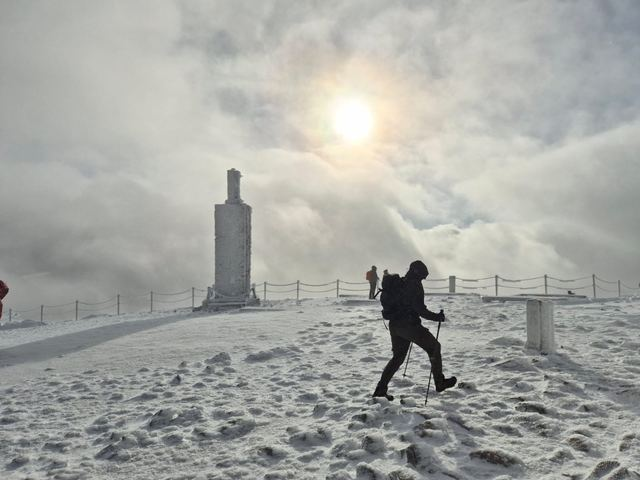
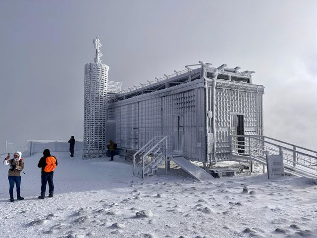
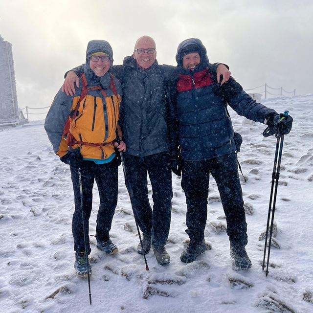
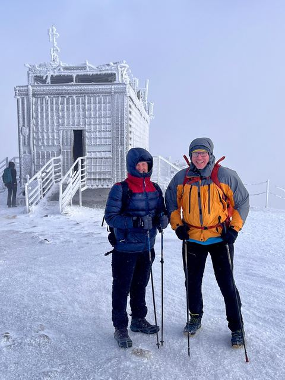
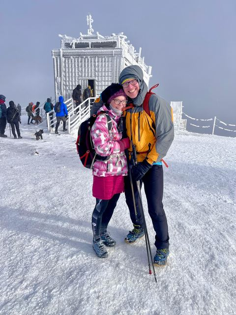

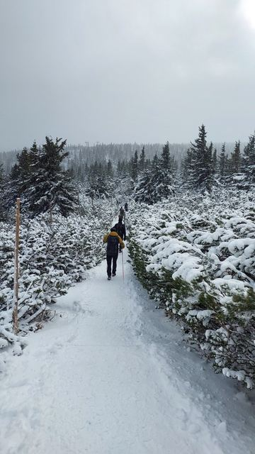

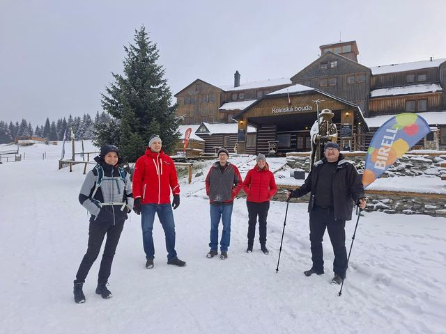
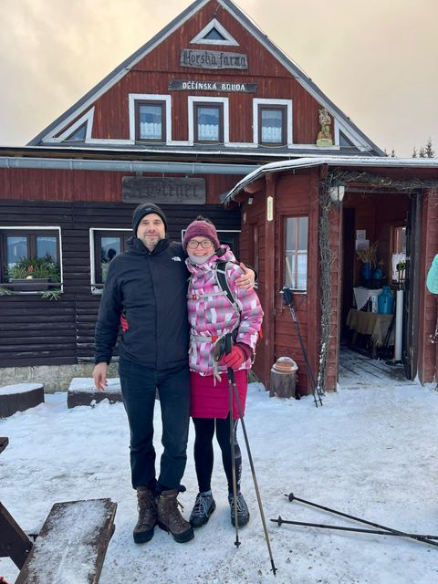

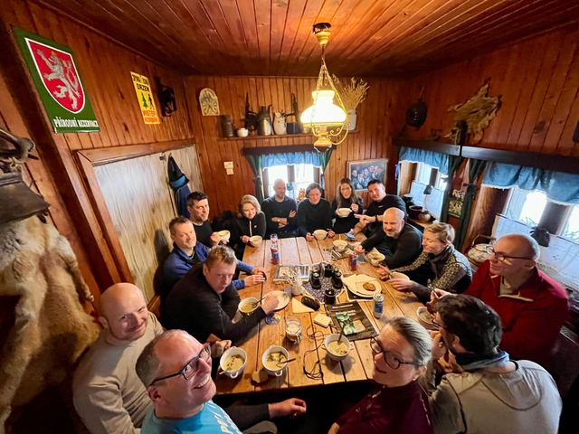
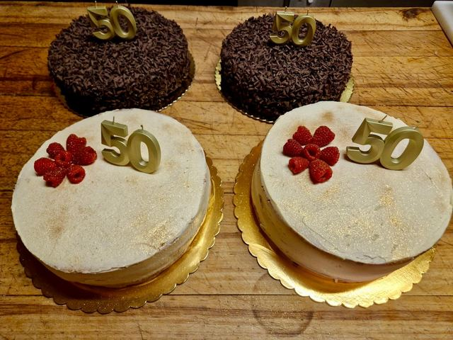


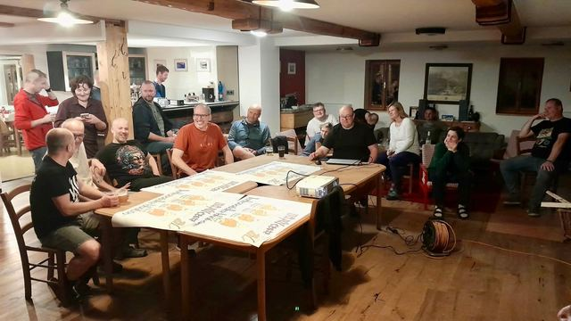
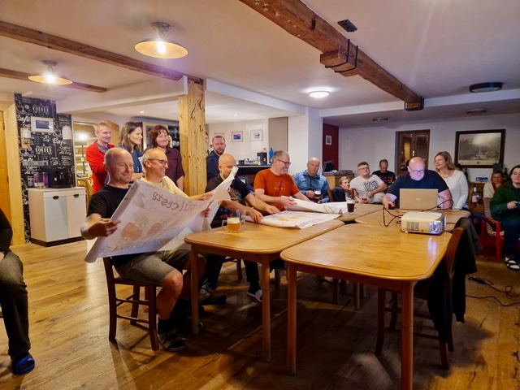
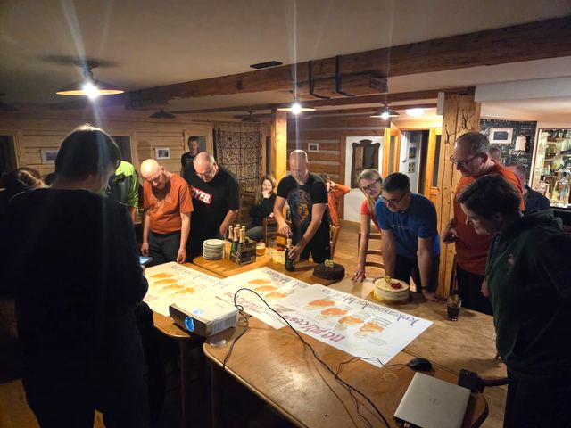
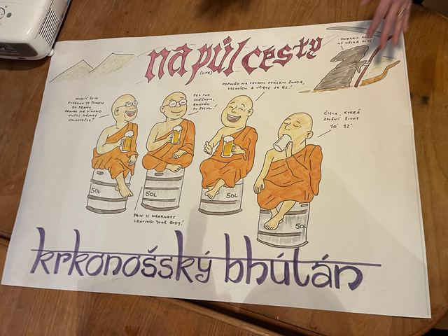
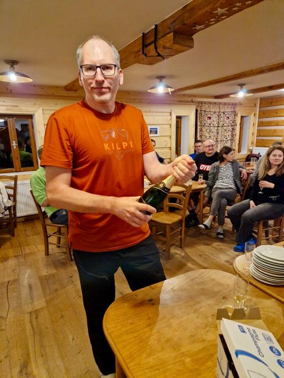
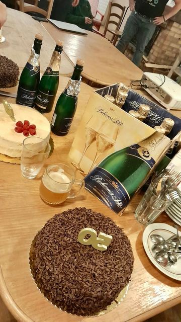
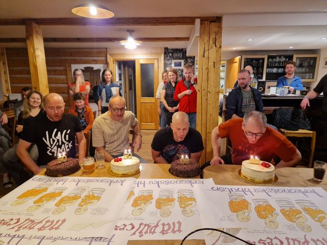

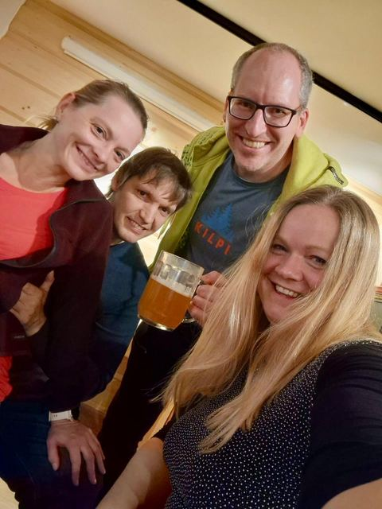
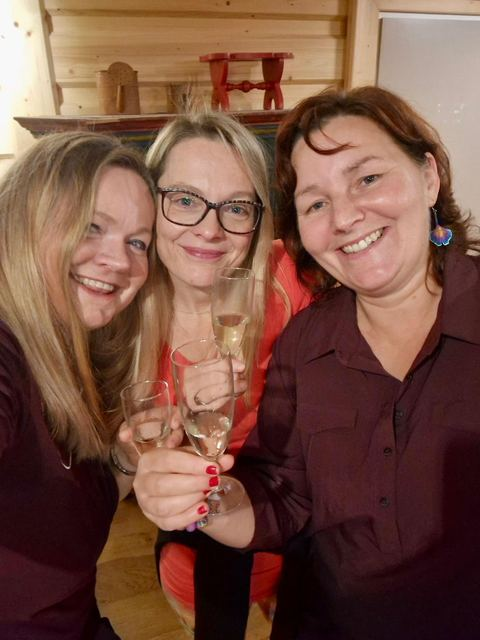
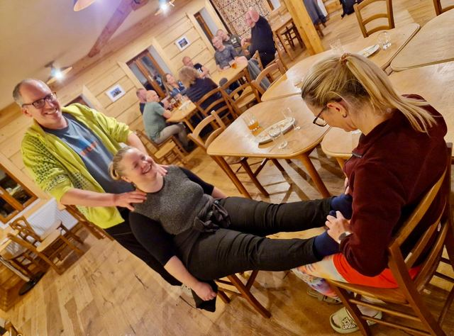
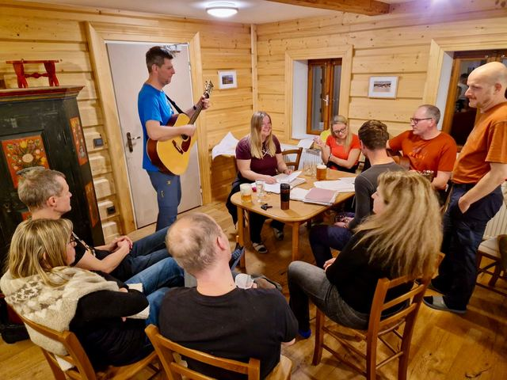
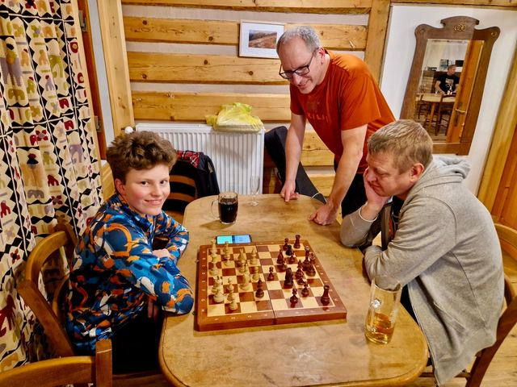
Máte další fotky nebo videa? Pošlete je kterémukoli z nás čtyř a rádi je sem přidáme.